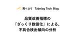
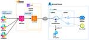
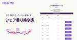
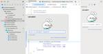
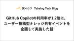
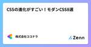

直近1週間の人気フィード
はてなブックマーク数を元に新着優先で並べ替え

SQSを用いたクレジットカード決済の非同期化 227ZOZO TECH BLOG
227ZOZO TECH BLOG
こんにちは、カート決済部カート決済サービスブロックの林です。普段はZOZOTOWN内のカートや決済の機能開発、保守運用、リプレイスを担当しています。 弊社ではカートや決済機能のリプレイスを進めており、これまでにカート投入のキャパシティコントロールや在庫データのクラウドリフトを実現しています。 techblog.zozo.com techblog.zozo.com 本記事では新たにクレジットカード決済処理を非同期化したリプレイス事例を紹介します。 はじめに 背景・課題 非同期化のシステム構成 パターン1 - 完全非同期化パターン パターン2 - 非同期・同期切り替えパターン パターン3 - ポー…
2日前

TypeScript開発にRailway Orientedを持ち込み、より型安全なエラーハンドリングへ 104Sansan Tech Blog
Digitization部 Bill One Entry*1グループの秋山です。 はじめに Domain Modeling Made Functionalというスゴ本 補講：Make Illegal States Unrepresentable バックエンドの処理を抽象化する 手続き型プログラミングの典型例 課題1：制約のないエラーハンドリング 課題2：低い可読性 課題3：エラーハンドリングの低い網羅性 Railway Oriented Programming TypeScriptで型安全にエラーハンドリングする ステップ1：サブ関数の出力はResult型で表現する ステップ2：サブ関数にRe…
2日前
入社4ヶ月目で73時間かかるバッチ処理を7倍以上高速化した話 49エムスリーテックブログ
こんにちは。エンジニアリンググループの武井です。 私は現在、デジカルチームに所属し、クラウド電子カルテ、エムスリーデジカルの開発に携わっています。 昨年夏にエムスリーに入社し、早くも半年が経過しました。 digikar.co.jp この記事では、私が入社してから4ヶ月目に取り組んだ、バッチ処理の運用改善について振り返ります。 特に、新しくチームに加わったメンバーとして意識した点に焦点を当ててみたいと思います。 これから新しいチームに参加する方の参考になれば幸いです。
1日前

分析基盤へのデータ連携処理をEmbulkからAmazon Aurora S3 Export機能に切り替えた話 28BASEプロダクトチームブログ
はじめに こんにちは！Data Platformチームでデータエンジニアとして働いている @shota.imazeki です。 分析基盤の構築・運用などの側面から社内のデータ活用の促進を行っています。 BASEではAurora MySQLにあるデータをEmbulkを用いてBigQueryに連携しています。BigQueryへ連携されたデータは分析基盤としてLookerなどを通して社内利用されています。 このデータ連携処理にはいくつかの課題があり、それを解決するためにEmbulkからAurora S3 Export機能を用いた連携処理に切り替えることにしましたので、それについて紹介していきたいと思…
13時間前

TypeScript5.4の新機能をピックアップ 33RAKUS Developers Blog | ラクス エンジニアブログ
はじめに こんにちは。フロントエンド開発課に所属している新卒1年目のm_you_sanと申します。 3月6日にTypeScript5.4がリリースされました。 そこで、今回は個人的に気になった機能についてピックアップして紹介したいと思います。 はじめに 型の絞り込み NoInfer まとめ
1日前

品質改善指標の「ざっくり数値化」による、不具合検出傾向の分析 30Tabelog Tech Blog
はじめに はじめまして！食べログシステム本部 品質管理室にて飲食店QCチームのマネージャーをしております、木川広基と申します。 今回は2022年6月にローンチし、現在着々と導入範囲を広げている食べログオーダーの開発チームにおいてチャレンジ中である品質改善指標の数値化と、それを用いての改善活動の歩みについてお伝えできればと思います。 目次 はじめに 背景 案件スコアとは 案件スコアの利用実例 今後の展望 最後に 背景 食べログオーダーはローンチから約1年半を迎えた現在、プロダクトとして急成長を目掛けるフェーズへ突入しています。 これまではプロダクトとしての地盤を固めるべく、ローンチ初期から導入頂…
1日前
画像配信を WebP にした際にやったことと困ったこと 27Pepabo Tech Portal
こんにちは。takutaka と申します。最近良かったことはMOTHER3をクリアしたことです。ペパボにおける画像配信GMO ペパボでは、クリエイターさんがアップロードした画像でTシャツなどのステキなアイテムが販売できる SUZURI というサービスや、EC支援サービスであるカラーミーショップやハンドメイドマーケット minne など、様々なサービスを運営しており、それぞれに画像の扱いは特徴があります。施策を実施したサービス今回はEC支援サービスであるカラーミーショップの配信する画像を対象として施策を実施しました。カラーミーショップにおける画像前述の通り、カラーミーショップではショップオーナーさんがアップロードした画像をショップに訪れたユーザーさんに閲覧してもらっています。作業内容以下、どのようなことをやっていったかを解説します。1. 効果の見積もりWebP に変換することにより、良さがないとやる意味はないですよね。効果の見積もりは重要です。2. 実装方針の決定ほとんどのブラウザが WebP を表示できるとはいえ、非互換ブラウザの考慮も行わなくてはなりません。Webサービス上の画像変換
1日前

Elastic Cloudの特権アカウント共用から脱却！ 15ZOZO TECH BLOG
はじめに こんにちは、SRE部 検索基盤SREブロックの花房です。普段は、ZOZOTOWNの検索関連マイクロサービスにおけるQCD改善やインフラ運用を担当しています。 以前まで、検索基盤を支えるチームではElastic Cloudの特権アカウントをメンバーで共用していました。本記事では、2023年4月にリリースされたElastic CloudのRBAC（Role-Based Access Control）機能を活用して、特権アカウントの共用から脱却した取り組みについて紹介します。さらに、既存機能と組み合わせることで実現した、効率的な権限管理についても紹介します。 同様の課題を抱えている読者の方…
13時間前
Engineering Manager のオンボーディング 12スタディサプリ Product Team Blog
こんにちは、@chaspyです。プロダクト開発部の部長をしています。 スタディサプリ小中高の開発組織では、Engineering Manager (以降 EM と記す) という役割があります。*1 その役割は、エンジニアリングマネージャ/プロダクトマネージャのための知識体系と読書ガイド を引用させてもらうと、People Management + Technology Management を主に担ってもらっています。*2 ありがたいことに、ここ数年で新たに EM にチャレンジしてもらえる機会が増えました。本稿ではそんな EM の活躍をサポートするオンボーディングの仕組みについて説明します。 …
16時間前

社内版 ChatGPT を構築し、社内の ChatGPT 利用を促進した話 239
メドピア開発者ブログ
SRE の田中 @kenzo0107 です。 社内版 ChatGPT を構築し、社内の ChatGPT 利用を促進した話です。 社内版 ChatGPT が必要だった理由 以下要望を実現する為です。 秘匿情報をクローズドな環境で OpenAI にポストしたい 社員誰もが最新のモデルやバージョンで高精度、且つ、パフォーマンスの高い ChatGPT を利用したい 構成 - Web 版 社内 ChatGPT Web サービスは AWS に配置 ALB を会社毎に分けて Google 認証する *1 ECS から Azure API Management 経由で Azure OpenAI Service…
6日前

なぜPMが25人も必要なのか 192SmartHR Tech Blog
こんにちは、CPOのadachiです。 この記事は「SmartHRのプロダクトマネージャー全員でブログ書く2024」への参加記事です。25人が持ち回りで毎週記事を投稿しています。 この企画にも関連するのですが、最近社外の方から「SmartHR、PM多！」という感想をいただくことが増えてきました。もしPMが多い ＝ 裁量が小さくてつまらない環境、と思われていたら心外すぎる……許せねぇ…… そこで本稿では、なぜSmartHRには25人もPMがいるのか、一体なにを作っているのか、仲はいいのか、今後どういったオポチュニティがあるのか、といったことについて説明していきたいと思います。オポチュニティは言い…
6日前

ZOZOTOWNのマーケティングプラットフォームでのフロントエンドの取り組み 24ZOZO TECH BLOG
はじめに こんにちは、MA部の林（@hayash__p）です。 私達のチームでは、メール、LINE、Push通知、サイト内お知らせなどでユーザにZOZOTOWNのセールや新着商品を紹介するといった、マーケティングに関わるシステムを開発しています。これまで、配信チャネルや配信内容ごとに個別最適化したシステムを開発していましたが、それらを一新したマーケティングプラットフォームを作ることになりました。新しいマーケティングプラットフォームであるZOZO Marketing Platform（以下、ZMP）の概要については以下のテックブログをご覧ください。 techblog.zozo.com 本記事では…
3日前
ソフトウェアエンジニアのライブラリアップデートの向き合い方 170Uzabase for Engineers
こんにちは。ソーシャル経済メディア「NewsPicks」NewsPicks Stage.事業のエンジニアをしています、林です。 業務では Next.js / Rust / Go などを用いて、経済・ビジネス情報に特化した動画配信サービスであるNewsPicks Stage.の開発・運用を行っています。 はじめに 突然ですが、皆さんは自身のソフトウェアのライブラリアップデートは行えていますか？ 皆さんはどのようにライブラリアップデートを行なっていますか？ 新機能を試したくて？ npm iで失敗してから頑張る？ Renovate / dependabot が自動Mergeされる環境？ もしくは対応…
6日前
フルスクラッチして理解するOpenID Connect (4) stateとnonce編 15エムスリーテックブログ
こんにちは。デジカルチームの末永(asmsuechan)です。この記事は「フルスクラッチして理解するOpenID Connect」の4記事目です。前回はこちら。 www.m3tech.blog
2日前
Findyデータ基盤のアーキテクチャと技術スタック 15Findy Tech Blog
1. はじめに Findyでデータエンジニアとして働いている ひらき（hiracky16）です。 この記事ではFindyで取り組んでいるデータ基盤について紹介します。 Findyでは2023年からデータエンジニアを採用し本格的にデータ基盤構築に着手しています。 これまではBigQuery（Google Cloud）を中心としたデータ蓄積・利活用をしていました。 今後もっとデータ分析、機械学習などのデータ利用を加速するためにデータマネジメントが不可欠だと考えており、データエンジニアを採用しています。 まだ1人目のデータエンジニアがジョインしてから半年間くらいの取り組みですが、現時点のアーキテクチ…
3日前

Pull Requestのレビュー負荷を軽減し、開発生産性を向上するためにチームで取り組んだこと 102ZOZO TECH BLOG
はじめに こんにちは。WEARフロントエンド部Webチームの藤井です。私たちのチームでは、WEARのWebサイトのリプレイスと新規機能の開発を並行して進めています。これらの開発を推進する中で、Pull Requestのレビュー負荷を軽減し、開発生産性を向上させるための取り組みを行なってきました。本記事では、その中で効果的だった取り組みについてご紹介します。 目次 はじめに 目次 背景と課題 レビューの体制の薄さ スコープの広さ 仕様把握の負担 対応内容についての説明不足 処理の複雑性 仕様の抜け漏れ 動作確認の手間 課題解決に向けた取り組み レビュー体制の見直し Pull Requestを小さ…
5日前

脱初級ITエンジニアまでの学習方法 87RAKUS Developers Blog | ラクス エンジニアブログ
こんにちは。 株式会社ラクスで先行技術検証をしたり、ビジネス部門向けに技術情報を提供する取り組みを行っている「技術推進課」という部署に所属している鈴木（@moomooya）です。 今回は毎年春先の社内ビアバッシュで新人向けに「一歩目の学習方法」として発表している話をしようと思います。 学習とは この記事の対象 学習に対する向き合い方 まず最初は 学習作戦その1「ちょい足し学習」 例）HTTPメソッドを扱ったとき 学習作戦その2「外から情報を仕入れる」 よくある情報源 技術書 技術同人誌 ウェブサイト 勉強会 SNS 飲み会 GitHub 脱初級者 手を動かす（検証と実践） 自由にできるサーバー…
5日前
新入社員がスタートダッシュの”バフ”を活用するコツを考えてみた 4inSmartBank
はじめまして、2024年1月にスマートバンクにプロダクトマネージャーとして入社したinagakiです。 転職や異動で新しい環境で働き始める際に、皆さんが意識していることは何ですか？ 入社して2ヶ月経ったので、入社エントリがてら、新入社員としてどう最初の数ヶ月を過ごすといいんだっけを考えて書いてみました。 自己紹介 新卒でDeNAに入社し、ソーシャルゲームのプロデューサーをしたり、がん検査の研究開発プロジェクトで事業開発をしたり、プロダクトマネージャー（PM）と事業開発の間のようなキャリアを歩んできました。その後、オンライン薬局を運営する医療系スタートアップに転職して事業責任者などをやっていまし…
2日前
TypeScript 5.5で型述語を推論できて最高。配列のfilterも型安全に 48Ubie テックブログのフィード
TypeScriptの次バージョン5.5で、開発者が長い間求めていた挙動が手に入ります。現状のTypeScript （執筆時点で5.4）では、ユーザー定義型ガードを使う際には型述語（用語は後ほど解説します）の記述が必要です。function isNumber(value: number | string): value is number { return typeof value === 'number';}6月リリース予定のTypeScript 5.5では、関数の実体から型述語の型推論（infer type predicates）が可能になります。すなわち、次のようなコー...
7日前
STORES はRubyKaigi 2024にNursery Sponsorとして協賛します 6
STORES Product Blog
こんにちは、技術広報のえんじぇるです。 STORES は2024年5月15日（水）〜17日（金）に沖縄県那覇市で開催されるRubyKaigi 2024にNursery Sponsorとして協賛します。 託児サポートの詳細については下記サイトに記載しておりますので、希望される方はご覧ください。美ら海水族館に行くアクティビティも用意しています🐠 sites.google.com STORES がNursery Sponsorをやる理由 STORES は2023年7月にダイバーシティ方針を掲げ、多様な社員が「らしさ」や得意を生かすことで、顧客に価値を提供し続ける組織づくりを行なっています。多様な属性…
3日前
イベント参加レポート「TechBrew in 東京 〜mtx2sさんと考えるコード品質とビジネスインパクト〜」 3カミナシ エンジニアブログ
こんにちは！ カミナシでエンジニアリングマネージャーとして働いております、吉永です。 先日、 3/21 に Findy さんが主催の「TechBrew in 東京 〜mtx2sさんと考えるコード品質とビジネスインパクト〜」というイベントに参加してきました。 findy.connpass.com イベントにブログライティング枠なるものがあったので、この枠での参加ではないものの、参加レポートを書いてみます。 動機 mtx2s さんの記事は以前から参考にさせていただくことが多くて、毎回首がもげそうになるくらいの共感や学びを得られていました。自分自身のマネジメントの参考にもしています。いつかお会いして…
1日前
インシデント対応訓練をやってみた 3OPTiM TECH BLOG
はじめに みなさん、こんにちは。 プロモーション・デザインユニット（以下プロモ・デザインU）の竹内・牧山・安田です。 今回はプロモ・デザインUの目標の一つである「プロモーション業務でのNOインシデント対策」をデザインサプリ（社内勉強会）で報告してきました。 プロモ・デザインUの活動について詳しく知りたい方は👉過去の記事をご覧ください！ プロモ・デザインUのOKR（目標）の記事はこちら tech-blog.optim.co.jp 社内デザイン勉強会「デザインサプリ💊」の記事はこちら tech-blog.optim.co.jp はじめに プロモーション業務でのNOインシデント対策 ヒヤリハット収集…
2日前

「シェア乗り時刻表」について 31NearMe Tech Blog
はじめに 先日、空港送迎のシェア乗りサービスの空席を埋めるための時刻表機能をリリースしました。 構想は昔からあったのですが、ようやく開発を進めて世に出すことができました。 ここではその機能概要やシステムについて説明します。 時刻表について NearMeではユーザー同士がタクシー/シャトルの車両をシェアして乗車するサービスを構築してきました（※同じシェアですが、昨今、ドライバー不足で議論されている"ライドシェア"は一般ドライバーと乗客のマッチングによるもので、それとは異なります）。 特に、空港送迎のような事前に予約するシナリオにおいて運行効率を高める機能を作ってきました。 ユーザー同士のマッチン…
5日前
Rails で PDF を作ったけど、時代遅れのやり方だったかもしれない 31ラブグラフのエンジニアブログのフィード
ラブグラフでエンジニアをしております横江( @yokoe24 )です！このあいだ PDF 出力機能の実装をしました！技術選定からその後の反省までをまとめます。 1. 技術選定PDF出力をおこなう Rails の gem は複数あります。まずはどの gem を使うか検討するために比較しました。（※ Ferrum, HexaPDF, Grover は、この記事を書くにあたって見つけたものなので、当時は選定対象ではありませんでした）gem名スター数main,masterへの最終コミット最新バージョンリリース日初回バージョンリリース日Prawn4.6k...
6日前
ゼロから始める社内セキュリティ留学 制度づくりの工夫と参加者の声 31Visional Engineering Blog
セキュリティ人材の不足が社会的な問題になっているのは皆さんも耳にしたことがあるのではないでしょうか。日本は3年連続で1組織あたりのサイバー攻撃が世界一の状況にありながら、欧米と比べ国家的な支援制度・法
7日前
Jaccard係数に基づく類似文書検索の高速化技法 4LegalOn Technologies Engineering Blog
こんにちは、LegalOn Technologiesでエンジニアをしている神田（@kampersanda）です。 本記事では、Jaccard係数に基づく類似文書検索の高速化技法を解説し、契約書検索での実験結果を報告します。
3日前

SwiftGenとSwift-DocCを活用してコード上の画像を一瞬でプレビューする方法 28Mirrativ Tech Blog
こんにちはiOS開発をしている福山です。 この記事では、SwiftGenとSwift-DocCを用いて、xcassetsを開かずにコード内の画像をQuick Help（右パネルまたは⌥オプションキー+クリック）で直接確認する方法を紹介します。 各ツールの簡単な説明 Swift-DocCは、Swift言語用のドキュメント生成ツールです。Swiftコード内に書かれたコメントから、ナビゲーションが容易で、見た目も美しいドキュメントを生成することができます。 SwiftGenは、Xcodeプロジェクトで使われるリソース（画像、フォント、色、ローカライズなど）を静的に型付けされたSwiftコードに変換す…
7日前
secret_key_baseが漏れると何が起きるのか実際に試してみた 22TechRacho
社内でRailsコードのレビューをしていて、 Dockerfile に環境変数で SECRET_KEY_BASE="dummy" のようにベタ書きしているのを見つけました。これはまずいよね、多分任意のセッション改ざんによるなりすましなどがし放題になりそうだよね、と思ったものの、これまで雰囲気で使っていて確かなことが言えなかったので、良い機会ということで少し調べてみることにしました。 🔗 secret_key_baseについて 🔗 secrets と credentials, RAILS_MASTER_KEY ってなんだっけ 🔗 secrets Rails 4.1で secrets.yml が登場して、enviro […]The post secret_key_baseが漏れると何が起きるのか実際に試してみた first appeared on TechRacho.
6日前

ラクスのグローバル開発：これまでの歩みと今後の展望 22RAKUS Developers Blog | ラクス エンジニアブログ
ラクスベトナム責任者の寺田です！ 2014年より、ラクスベトナムは、ラクスの開発子会社として共にSaaS開発を進めています。 ラクスでは、今後グローバルな開発の重要性が更に増大すると考えており、今回のブログでは、そんなラクスの日本ーベトナム間のグローバル開発の様子と今後の展望を簡単にお伝えしたいと思います。 ラクスのグローバル開発は、日本とベトナムがお互いにワンチームである意識を強く持ち、開発に取り組んでいる点が特徴です。 その上で、ベトナムチームには、より重要な役割を担う事が期待されています。そのため、ぜひ、これから入社される方と一緒に、開発領域のさらなる拡大や成長を加速させていきたいです！…
6日前
ruby.wasmはじめの一歩: Ruby Next Playground構築の舞台裏（翻訳） 3TechRacho
概要 元サイトの許諾を得て翻訳・公開いたします。 英語記事: First steps with ruby.wasm: or how we built Ruby Next Playground—Martian Chronicles, Evil Martians’ team blog 原文公開日: 2024/02/06 原著者: Vladimir Dementyev（首席バックエンドエンジニア）、Travis Turner（技術記事編集者） サイト: Evil Martians -- ニューヨークやロシアを中心に拠点を構えるRuby on Rails開発会社です。良質のブログ記事を多数公開し、多くのgemのスポンサー […]The post ruby.wasmはじめの一歩: Ruby Next Playground構築の舞台裏（翻訳） first appeared on TechRacho.
2日前
【CSPヘッダー】セキュリティを守るブラウザの盾 3GMOアドパートナーズ TECH BLOG byGMO
こんにちは、GMO NIKKOのryoutakoです。普段はRuby on Railsを使った開発やプロダクトの脆弱性診断などセキュリティ関連の業務をしています。 今回はHTTPヘッダーの一つであるContent Sec
3日前
Prismaのテストでデータ削除を高速化する 3Ubie テックブログのフィード
背景ユビーではNode.jsのアプリケーションにおいて、DBのORMにPrismaを採用しています。Prismaに限らず、実際のデータベースを使ったテストにおいてはテストを実行するごとにデータを削除することでテストごとのデータの干渉を防いでテストの安定性を保つという手法が用いられます。今回はPrismaでテスト時にデータ削除するときのパフォーマンス改善の事例について紹介します。今開発しているアプリケーションでは以下のように、DBを用いるテストを実行する前に全てのテーブルを truncateするという素朴な方法でテストDBの掃除を行っていました。import { Prisma, ...
3日前

GitHub Copilotの利用率が1.2倍に。ユーザー投稿型ナレッジ共有イベントを企画して実施した話 17Tabelog Tech Blog
こんにちは。食べログシステム本部技術部データサイエンスチームの先端領域推進ユニットに所属する佐藤です。 私たちのユニットでは、先端領域技術を活用して多方面で価値を創造することをミッションとしており、生成AI技術を活用した業務効率化や開発生産性向上に取り組んでいます。その取り組みの１つとして、生成AI技術によって開発生産性を上げることを目的とした、コーディング支援ツール「GitHub Copilot」の導入を推進しています。 先日、GitHub Copilotの利用を促進させるために、社内ナレッジ共有イベントを企画・実施しました。このイベントは、参加者に実際の開発現場で使われているGitHub …
5日前

GitHub Actions に Python のパッケージインストーラー uv を導入する 11KAKEHASHI Tech Blog
こんにちは。 カケハシの Musubi AI在庫管理 チームにて業務委託のエンジニアをさせていただいております takanakahiko と申します。 今回はuvをGitHub Actionsに導入したらとても効果があったので、紹介することができればと思います。 uvとは uvとはPythonのパッケージインストーラー・リゾルバーです。 その最大の特徴はRust言語で開発されており、従来のツールの100倍の速度で動作する点です。 pipやpip-toolsのdrop-in replacementが可能であることも特徴です。 開発をするのはAstralです。 AstralはRuffの開発で有名で…
6日前

CSSの進化がすごい！モダンCSS8選 9株式会社ココナラさんのフィード
こんにちは！株式会社ココナラフロントエンド開発グループの雨嶋です。最近の CSS の進化はすさまじいです。今までは Javascript 数行で実装していた部分が CSS1 行で済んだりします。ただ知ってないと使えないので、自分の勉強も兼ねて便利そうな CSS を 8 個選定しました。大体モダンな CSS を選定したつもりですが、もうモダンではないものもあるかもしれません。（いつからがモダンなのか、、）本記事ではそれぞれ軽く説明するに留めますので、詳細については MDN Web Docs などで調べていただければと思います。 コンテナクエリコンテナクエリは、要素のサイ...
6日前

PHPerKaigi 2024に2名のメンバーが登壇しました 8BASEプロダクトチームブログ
2024/03/07(木)~2024/03/09(土)に開催された PHPerKaigi 2024 にて、BASE株式会社から2名のメンバーが登壇しました! 登壇者 2 名からコメントと、会場の様子やセッションについてお届けします! 登壇者のコメント Futoshi Endo (@Fendo181) speakerdeck.com BASEでバックエンドエンジニアをしています、遠藤です。 2日目に「PHP8の機能を使って堅牢にコードを書く」というタイトルで発表させて頂きました。 業務でもPHPを書いているのですが、PHP8で提供されている機能は使ってより堅牢に書くにはどうすればいいのか? が…
6日前

Kubernetesでお手軽ストレージ構築！Rook Ceph導入の5ステップ 8GMO Developers
Rook Ceph とは Rook Cephは、Kubernetes上（k8s上）に分散ストレージのCephをデプロイし、ストレージの運用を自動化するストレージオペレーターで、Cephは分散オブジェクトストレージ機能を提 […]
6日前

Amazon EKS の Ingress を考える ~ AWS Load Balancer Controller + Istio ~ 7東京ガス内製開発チーム Tech Blog
みなさんこんにちは、杉山です。花粉症に必死に抗う毎日ですが、気づいたら3月も残りわずかですね。同士のみなさん、がんばって乗り越えましょう！ さて今回は、私の前回記事：Amazon EKS 導入に続いて、少しだけ深堀りして Ingress の部分について書いてみたいと思います。 Amazon EKS の Ingress を考える ALBC + Istio 全体構成 構築してみる - ALBの作成 - Istio コアコンポーネントのインストール Gateway リソースの作成 Virtual Service の作成 実際にやってみて さいごに Amazon EKS の Ingress を考える …
6日前
【Backlog API】プロジェクト内の課題添付ファイルの一覧やファイル容量を取得する方法 6GMOアドパートナーズ TECH BLOG byGMO
はじめに こんにちは。GMO NIKKOの石丸です。 私が所属する部署では案件管理にBacklogを活用していますが、Backlogプロジェクトの容量削減の一環で課題に添付されたファイルやファイル容量の一覧を抽出すること
7日前
Repro Tech Meetup #8 – Deep Dive into Browsers を開催しました 5Repro Tech Blog
Repro Tech Meetup #8 – Deep Dive into Browsers こんにちは、Repro Booster開発責任者のEdward Fox（edwardkenfox）です。 3/15（金）に「Repro Tech Meetup #8 – Deep Dive into Browsers」という勉強会を開催しました。私たちがRepro Boosterの開発と運用を行っている中で、ブラウザの仕様や細かい挙動に関する知見が少しづつ溜まっており、テックブログとは違う形で発表できないかと思いこのイベントを企画しました。また幸運なことに、ブラウザの有識者やサービス開発を通した知見を…
7日前

レゴ® エデュケーション SPIKE™ プライムでAIの可能性を探る！ レゴ×深層学習で画像認識自動走行を学ぼう 3GMO Developers
「AIで未来を創るNo.1企業グループ」実現を目指す GMOインターネットグループでは「AIで未来を創るNo.1企業グループへ」を掲げ、 を軸に、グループ全パートナーを挙げてAIの活用、AI関連サービスの提供を進めていま […]
5日前
Go 1.22 の Vet 変更点について 3ANDPAD Tech Blog
こんにちは、バックエンドエンジニアをしています武山 (bushiyama) です。 ANDPADボードという稼働管理アプリのバックエンドを担当しています。 andpad.jp これはなに Go 1.22 リリースパーティにて登壇発表した内容を、実例コードを添えてあらためて起稿したものです。 当日の資料は別途こちらを参照ください。 speakerdeck.com 発表したこと Go 1.22 のお祝いということでリリースノートのTool関連から、Vet周りの更新内容について発表してきました。 おさらい まずおさらいからということで、Vetとはなにか。 pkg.go.dev 上記ドキュメント Ov…
6日前

ZOZOTOWNのマス配信バッチのリプレイス 3ZOZO TECH BLOG
はじめに こんにちは、MA部の中原です。 MA部ではメルマガやLINE、アプリプッシュ通知を配信するためのマーケティングオートメーションシステムを開発・運用しています。 2022年からこのマーケティングオートメーションシステムをリプレイスするためのプロジェクトをMA部で進めています。リプレイス後の新しいマーケティングプラットフォームを「ZOZO Marketing Platform（略称：ZMP）」と呼んでいます。ZMPの概要については以下のテックブログをご覧ください。 techblog.zozo.com 本記事では、マス配信バッチのリプレイスについてご紹介します。 目次 はじめに 目次 配信…
7日前